Графлар назарияси
Айтайлик иккита V, E – тўплам (чекли) берилган бўлиб, бу ерда:
•V – чекли сондаги нукталар (учлар) тўплами,
•Е – эса тартибланмаган V – тўплам элементлари жуфтлигидан иборат бўлсин.
У холда тўпламларнинг V, E – мажмуасига граф деб аталади ва G(V,E) – каби белгиланади.
V – графнинг учлари тўплами, Е – графнинг кирралари тўплами деб юритилади.
(аi, aj) – кирра деганда аi ва аj – учларни бирлаштирувчи кесма (ёки ёй) тушунилади.
Мисол. Агар V={a1,a2,a3,a4,a5,a6,a7}, E={(a1,a2), (a2, a2), (a4,a5), (a5,a6), (a5,a6), (a6,a7),(a5,a7)} бўлса, у холда V ва E тўпламлар мажмуаси G(V,E) – графни аникланг.
Ечиш. Келтирилган тўпламлар мажмуий куйидаги кўринишда тасвирланади:
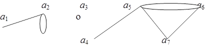
Айтайлик а1, а2 – граф учлари, е=(а1, а2) – эса бу учларни туташтирувчи кирра бўлсин. У холда а1 – уч ва е – кирра «инцидент (тўкнаш)» ва а2 – уч ва е – кирра хам «инцидент» деб юритилади.
Таъриф. Иккита кирра ўзаро ёндош дейилади, агарда бу икки кирра битта учга «инцидент» бўлса.
Таъриф. Агар иккита уч битта киррага «инцидент» бўлса, у холда бу учлар ўзаро ёндош деб аталади.
Мисол. Куйида тасвирланган граф учун кайси учлар, кирралар ўзаро ёндош эканликлари аниклансин.
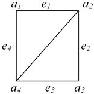
Ечиш: Бу графда а1 ва а2, а2 ва а3, а3 ва а4, а4 ва а1, а2 ва а4 – учлар ўзаро ёндош бўлса, а1 ва а3 учлар ёндош эмас. Шунингдек е1 ва е2, е2 ва е3, е3 ва е4, е4 ва е1, е1 ва е5, е2 ва е5, е3 ва е5, е4 ва е5- кирралар ўзаро ёндош, е1 ва е3 хамда е2 ва е4 кирралар эса эса ўзаро ёндош бўла олмайди, чунки таьриф шартларига мос келмайди.
Фараз килайлик, чекли G(V,E) – граф берилган бўлсин, яьни V, E – тўпламлар мажмуаси аникланган.
Таъриф. Агар берилган граф Е – тўплам элементлари тартибланган жуфтлик элементларидан иборат бўлса, у холда каралаётган граф ориентирланган (ёки орграф) деб аталади.
Мисол. Куйидагича берилган граф:
V={1, 2, 3, 4, 5, 6, 7};
E={(1,2), (1,3), (2,1), (2,3), (2,4), (2,5), (2,7), (3,5), (4,5), (4,7), (6,4), (6,5), (6,7), (7,4) }
ориентирланган графга мисол бўла олади.
Ечиш. Бу ерда Е – тўплам элементларига эьтибор килсак, барчаси тартибланган яъни бу жуфтликлар ичида (аi, aj); i =j бўладиганлари йўк. Шу сабабли хам берилган граф ориентирланган графга мисол бўла олади ва куйидагича графикда тасвирлаш мумкин.
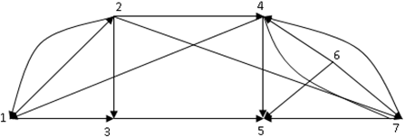
Таъриф. Агар берилган графдаги Е – тўплам элементлари ичида (бу элементлар жуфтликлардан иборат) (аj, aj) - бир хил V – тўплам элементлари жуфтлиги иштирок этса, Е – тўпламнинг бундай элементига илмок (петля) дейилади, берилган графга эса илмокли граф ёки псевдограф деб аталади.
Мисол. Куйидаги граф:
V={a1,a2,a3,a4}; E= {(a1,a1), (a1,a2),(a1,a3),(a2,a3),(a4,a2), (a2,a4)}
Псевдографга мисол бўла олади.
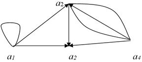
Таъриф. Агар берилган псевдографда илмок иштирок этмаса, бундай граф мультиграф дейилади.
Таъриф. Берилган граф белгиланган деб аталади, агарда граф учлари бир-биридан бирор белги оркали фарк килса.
Таъриф. n та учли ориентирланган белгили граф учун ёндошлик матрицаси деб куйидаги тенглик билан аникланувчи А=(аij), i, j = 1, 2, ..., n матрица элементларига айтилади:
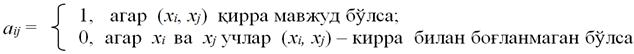
Масалан, куйидаги граф учун:
Ёндошлик матрицаси куйидаги кўринишда бўлади:
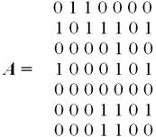
Таъриф. n та уч ва m та киррадан иборат ориентирланмаган граф учун инцидентлик (тўкнашишлик) матрицаси деб, шундай В=(bij), i=1,2........n, j=1,2.....m матрицага айтиладики, унда сатрлар граф учларига, устунлар эса кирраларга мос келиб, элементлари куйидаги тенглик билан аникланади:
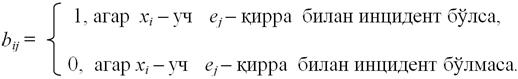
Таъриф. n та уч ва m та киррадан иборат ориентирланган граф учун инцидентлик (тўкнашишлик) матрицаси деб, шундай В=(bij), i=1,2........n, j=1,2.....m матрицага айтиладики, унда сатрлар граф учларига, устунлар эса кирраларга мос келиб, элементлари куйидаги тенглик билан аникланади:
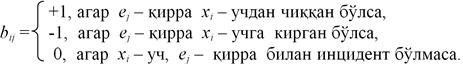
Масалан, куйидаги граф учун:
Инцидентлик матрицаси куйидаги кўринишда бўлади:
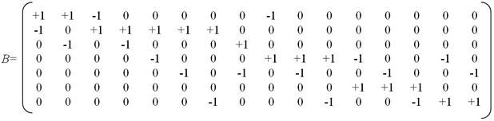
Таъриф. Берилган графнинг а учига инцидент (тукнаш) кирралар сони, а учнинг даражаси дейилади ва d(a) – оркали белгиланади:
"a - учун 0 d(a) p–1 , бу ерда р – берилган граф учлари сони.
Таъриф. Агар берилган графда учларининг минимал даражаси ва максимал даражаси бир хил бўлиб, у k га тенг бўлса, у холда берилган граф «k» даражали регуляр деб аталади.
Мисол. Куйида келтирилган граф 3-даражали регуляр графга мисол бўлади:

Таъриф. Берилган графдаги маршрут деб, шундай граф учлари ва кирралари кетма-кетлигига айтиладики:
а0, е1, а1, е2,........,еk, аk
бу ерда ихтиёрий иккита элемент ўзаро инцидент бўлади.
Агар а0=аk бўлса, у холда маршрут ёпик акс холда очик деб аталади.
Таъриф. Агар граф маршрутида унинг барча кирралари турлича бўлса, у холда граф маршрути занжир деб аталади.
Агар граф маршрутида барча уч ва кирралар турлича бўлса, бундай маршрут оддий занжир деб аталади. Берилган занжирда:
а0, е1, а1, е2,........,еk, аk
а0 ва аk учлар занжир охирлари деб юритилади
Таъриф. Берилган граф учун занжир ёпик бўлса, бундай занжир цикл деб аталади. Ёпик оддий занжир эса оддий цикл деб аталади.
Мисол. Келтирилган граф учун маршрут, занжир ва циклларни кўрсатинг:
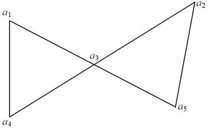
Ечиш. Юкорида келтирилган таърифлардан келиб чикиб, куйидаги фикрларни айтиш мумкин:
1. а1, а3, а1, а4 – маршрут, лекин занжир эмас;
2. а1, а3, а5, а2, а3, а4 – занжир, лекин оддий занжир эмас;
3. а1, а4, а3,а2, а5 – оддий занжир;
4. а1, а3, а5, а2, а3, а4, а1 – цикл лекин оддий цикл эмас;
5. а1, а3, а4 – оддий цикл.
Таъриф. Берилган граф маршрутининг узунлиги деб, ундаги кирралар (такрорийлари билан) сонига айтилади.
Агар маршрут М=а0,е1,а1,е2,..,еk,аk бўлса, у холда маршрут узунлиги:
|М|=k оркали белгиланади.
Таъриф. Графнинг берилган иккита учи богланган дейилади, агар уларни бирлаштирувчи (оддий) занжир мавжуд бўлса. Агар берилган графда барча учлар богланган бўлса, бундай граф богланган граф деб юритилади.
Таъриф. G-графдаги занжир Эйлер занжири деб аталади, агар занжир, G-псевдографнинг хар-бир киррасидан бир мартадан ўтган бўлса. Бундай граф эса Эйлер графи деб аталади.
Таъриф. Графнинг бирор учида учрашган кирралари сони шу учнинг индекси деб аталади.
Теорема. Берилган G-псевдографда Эйлер занжири мавжуд бўлади факат ва факат:
1) Граф богланган бўлса;
2) Агар графнинг ички учлари ичида ток индексли учлари учрамаса ёки шундай учлар иккитадан ортмаса (ички учлар занжирнинг боши ва охири хисобланмайди).
3) Агар а ва
b – учлар занжирнинг боши ва охири бўлиб,
а b, у холда
бу учлар индекси ток бўлса;
b, у холда
бу учлар индекси ток бўлса;
4) Агар а ва b – учлар занжирнинг боши ва охири бўлса ва а=b, у холда бу учларнинг индекси жуфт бўлса.
Таъриф. Агар берилган граф оддий циклга эга бўлса, бундай цикл Гамильтон типидаги цикл, граф ўзига эса Гамильтон графи деб аталади.
Граф Гамильтон типидаги бўлиши учун богланган бўлиши керак.
Теорема. Агар берилган G(V,E) - графда "а учун d(a) p/2 бўлса, у холда берилган G(V,E) – граф Гамильтон типида бўлади.
Машклар.
1. Куйида келтирилган графда кайси маршрутлар цикл ва оддий цикл ташкил килишлари аниклансин.
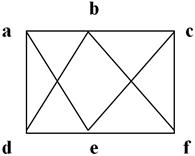
A) dabcfbed; B) bfcedbfcb; C) abcfebfca; D) aecfbda.
2. Берилган матрица бўйича графни тасвирланг.